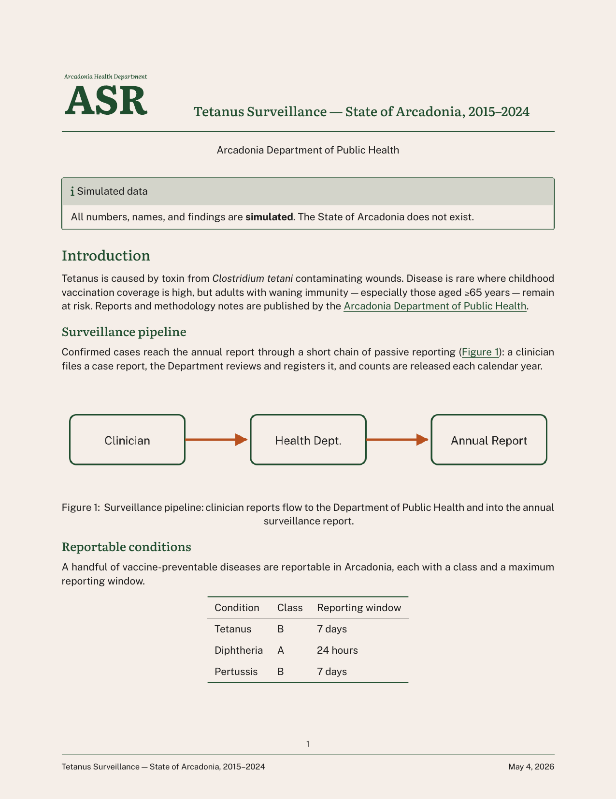
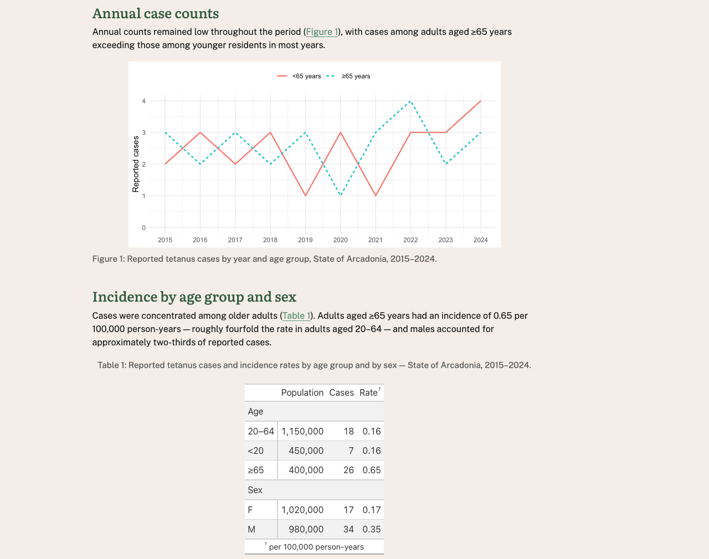
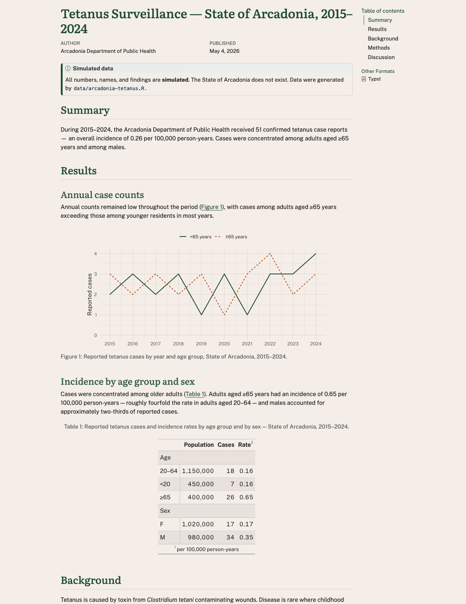
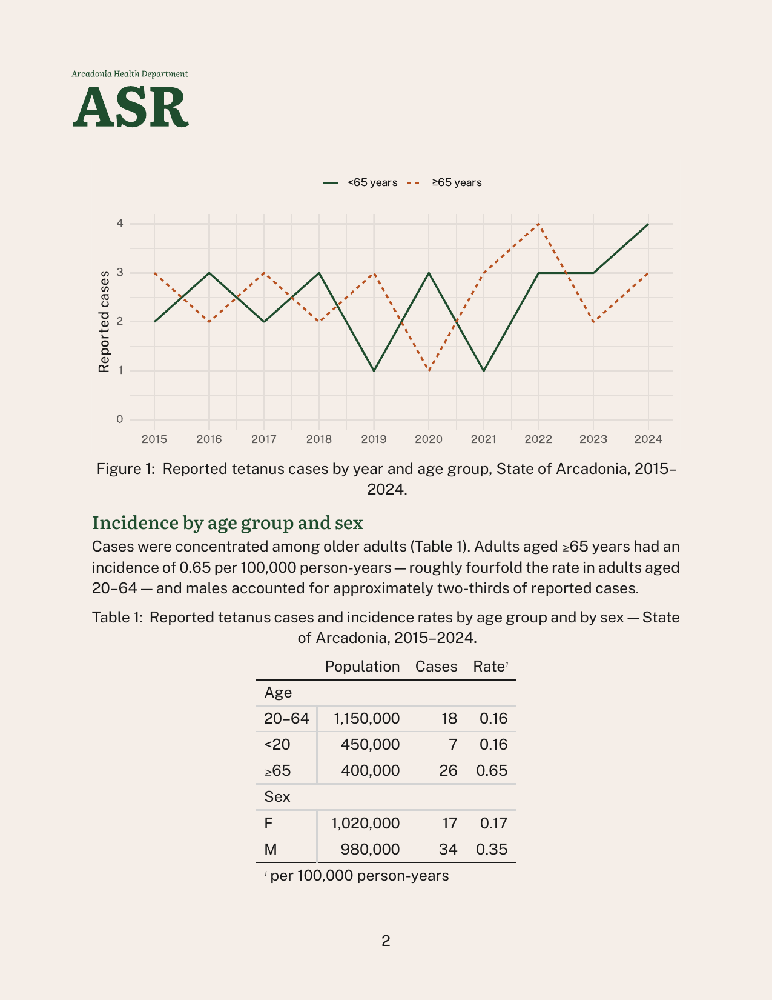
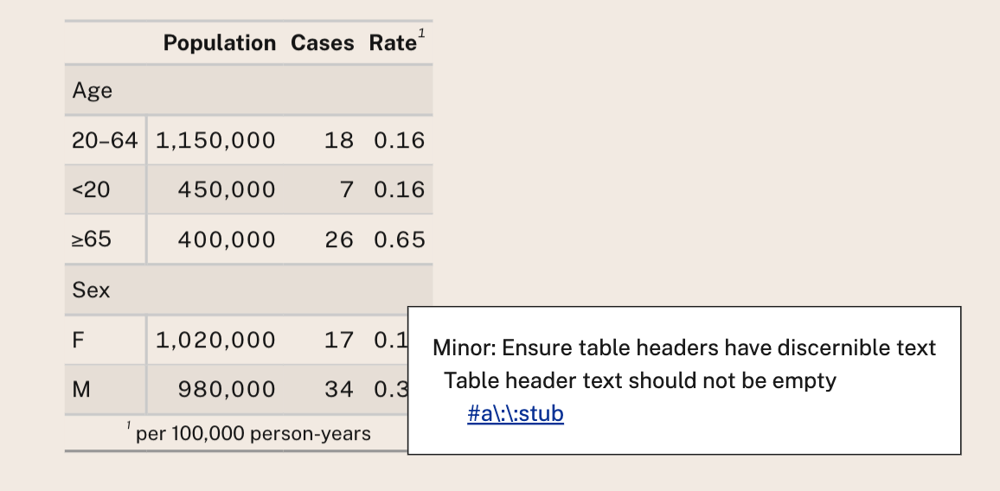

Building Accessible,
On-Brand Documents
with Quarto
R/Medicine Demo
2026-05-05
Slides
Hello, I’m Charlotte Wickham

Slides
Motivation
Accessible
Reach
Legal requirements: Section 508, ADA Title II, Web Accessibility Directive, European Accessibility Act
Technical standards: WCAG 2.0 AA, WCAG 2.1 AA, PDF UA-1
On-brand
Trust
Fonts
Logos
Colors
Tone
Demo
Start with 01-demo.qmd
Add brand
Check accessibility
Customize appearance
What about code? Later…
Add a brand
From an external repository:
Quarto: Preview (HTML)
Quarto: Preview Format… (Typst (PDF))
Applies typography, colors, and logo (typst only)
Update? Run quarto use brand again.
Brand components
_brand.yml
# Arcadonia Health Department brand
# A fictional public-health agency
meta:
name: Arcadonia Health Department
link: https://example.org/arcadonia-health
logo:
images:
seal:
path: images/ahd-seal.svg
alt: Arcadonia Health Department seal
wordmark:
path: images/asr-wordmark.svg
alt: Arcadonia Health Department Arcadonia Surveillance Reports
small: wordmark
medium: wordmark
large: wordmark
color:
palette:
forest: "#1f4d2e"
forest-dark: "#0f2e1a"
forest-light: "#5B9573"
cream: "#f5eee8"
ink: "#1a1a1a"
rust: "#b8511f"
background: cream
foreground: ink
primary: forest
typography:
fonts:
- family: Literata
source: google
weight: [400, 500, 700]
- family: Public Sans
source: google
weight: [400, 700]
base:
family: Public Sans
size: 12pt
headings:
family: Literata
weight: 500
color: primary
link:
color: forest-light
decoration: underline
defaults:
bootstrap:
defaults:
callout-color-note: $brand-forestCheck accessibility: HTML
To see results in the document:
Tip
Remember to remove axe before publishing!
Uses axe-core to check WCAG 2.0 Level A & AA, WCAG 2.1 Level A & AA & Best Practices
Check accessibility: Typst (PDF)
Checks against PDF/UA-1:
- Within Typst
- On resulting PDF with veraPDF, e.g. against PDF/UA-1 ruleset
Brand tweaks
Fix upstream in cwickham/arcadonia-brand:
Brand tweaks: CSS/SCSS
Code in repo: examples/brand-tweaks/
Brand tweaks: Typst rules
typst-style.typ
Code in repo: examples/brand-tweaks/
Control layout: Partials

Code in repo: examples/partials/
Code Outputs
02-with-code.qmd a report with a ggplot2 plot and gt table.
Problem: code outputs don’t automatically use brand fonts or colors.

Access brand via brand.yml package
Access brand in R:
Extract components:
Apply brand using package specific functions
ggplot2
gt
Branded outputs
HTML


Accessibility in practice

Authoring accessible documents
Authoring in .qmd naturally encourages:
- Using semantic structure (but don’t skip heading levels)
- A reading order
Accessibility checks will catch some problems:
- Missing alternative text (always set
fig-alt) - Contrast of text and background in
format: html
Automatic checks aren’t enough
- Is your alt text meaningful?
- Does the PDF tagging structure reflect logical structure?
- Are charts readable under color-vision deficiencies?
- Are tables coherent under cell-by-cell navigation?
- Can a real person who relies on assistive tech actually use this?
Accessibility is a shared responsibility
A reader reports an issue with a table in your PDF when using VoiceOver in Adobe Acrobat Reader.
The “fix” might live in:
Your code gt knitr Quarto Pandoc Typst Adobe Acrobat Reader VoiceOver
Expect work-arounds for now — and improvement as more people test and report.
Questions?
Useful links
- Quarto brand documentation: https://quarto.org/docs/authoring/brand/
- Quarto HTML accessibility: https://quarto.org/docs/output-formats/html-accessibility.html
- PDF Standards and Accessibility - Typst: https://quarto.org/docs/output-formats/typst/#pdf-standards-and-accessibility
- Typst’s accessibility guide: https://typst.app/docs/guides/accessibility/
What about PDF via LaTeX?
pdf-standard also works for pdf:
(But, no brand support for pdf…)